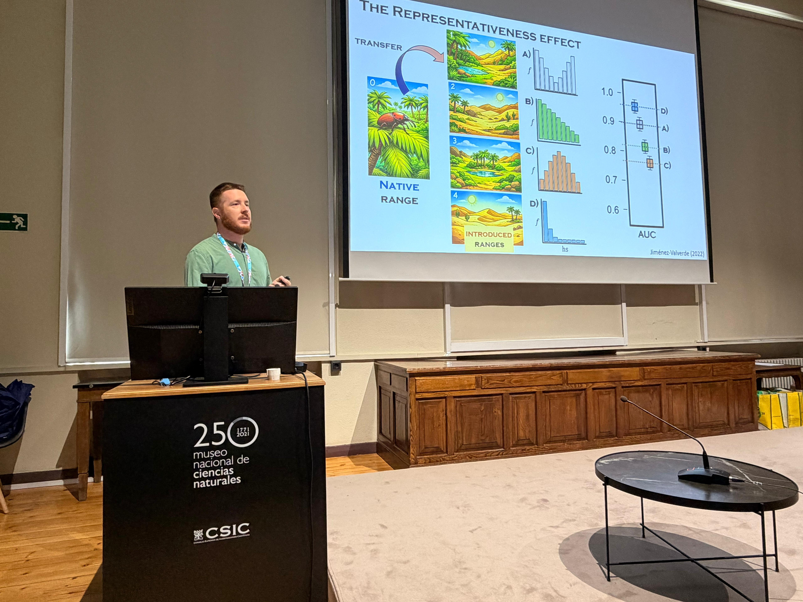
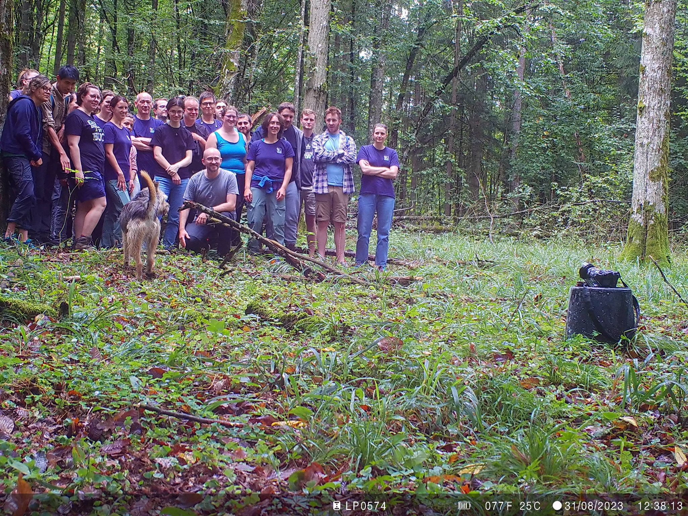
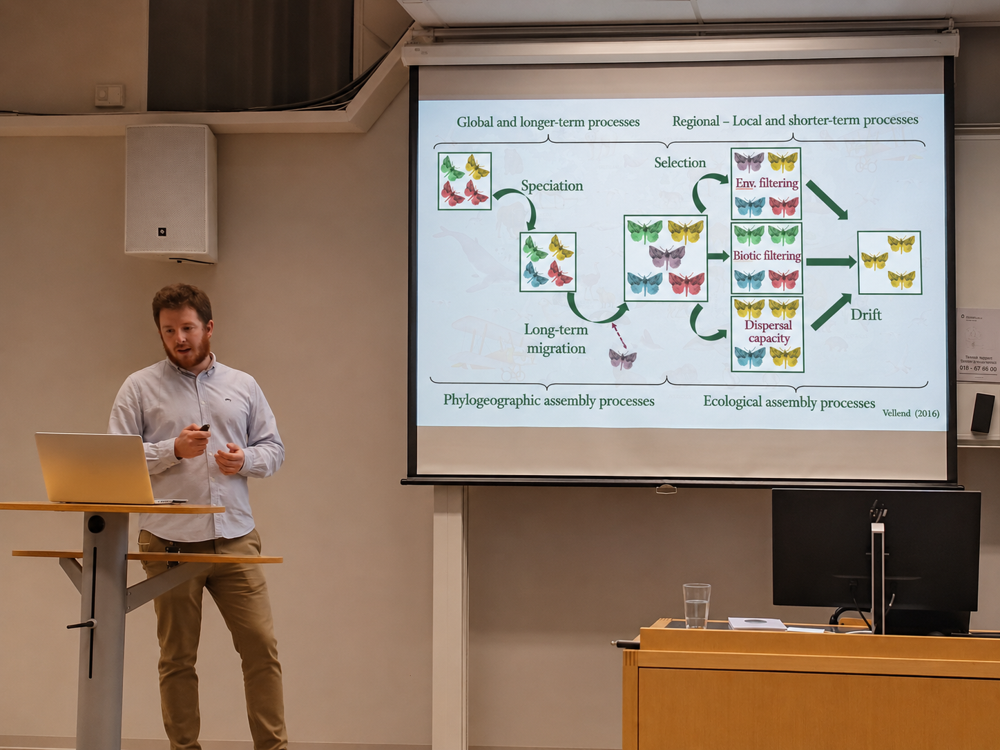
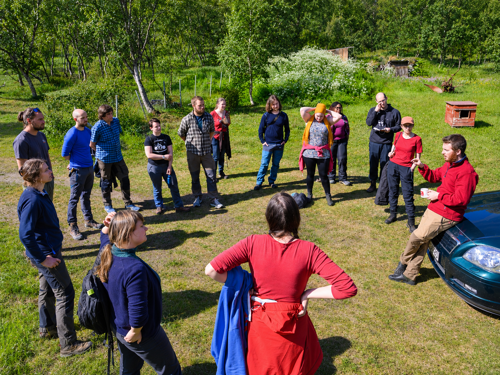
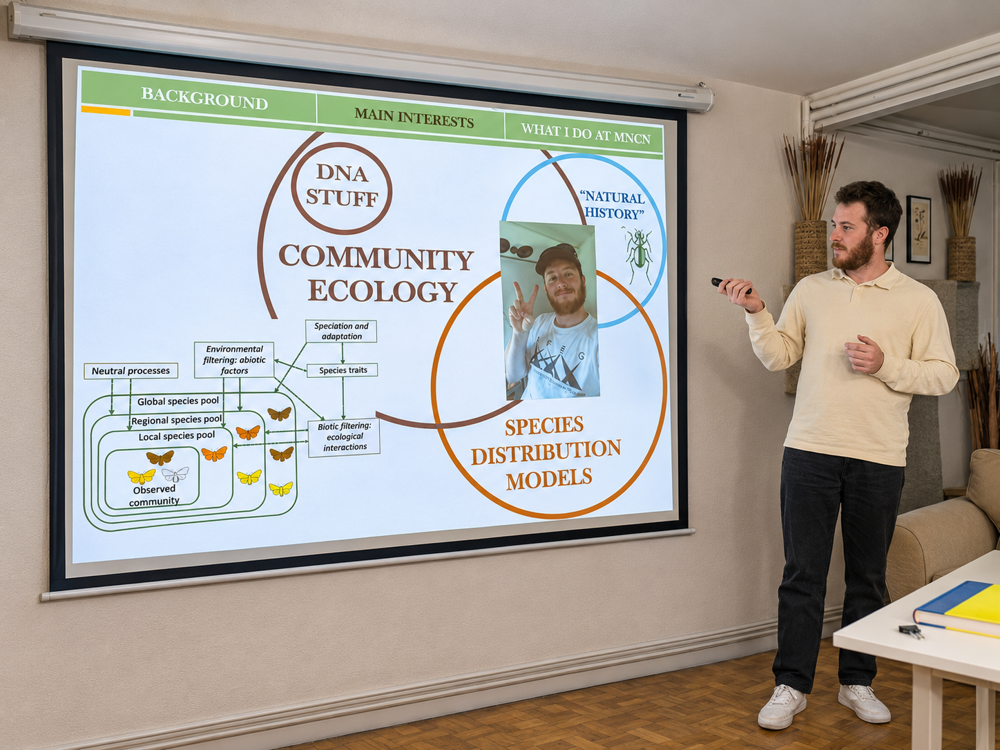
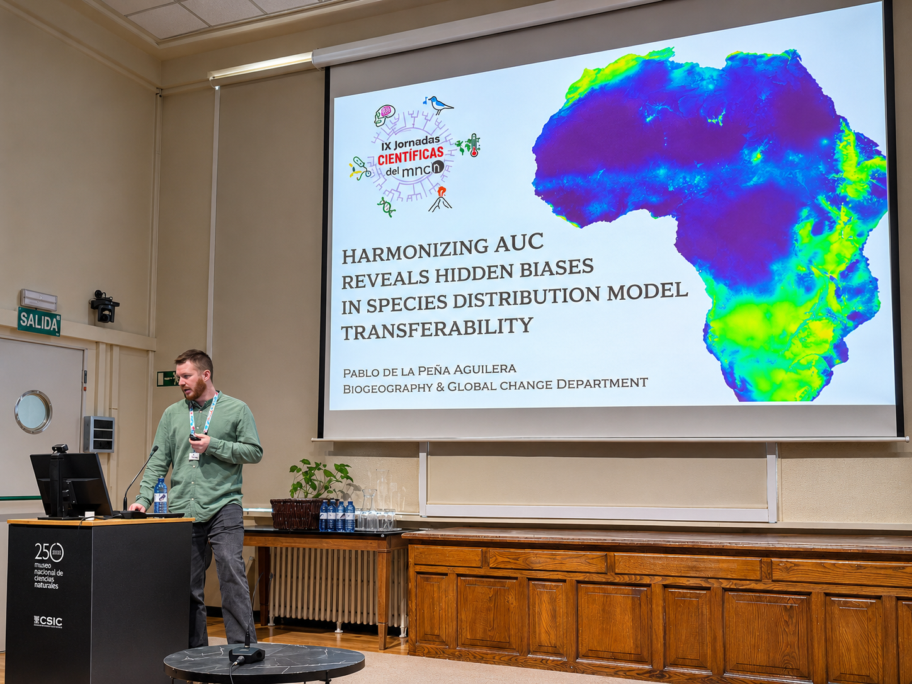

Scientific outreach
Scientific communication, conferences and being part of the research community
International Conferences and workshops
2026 · IX Jornadas Científicas del Museo Nacional de Ciencias Naturales — 18th–19th March, Madrid, Spain · Oral presentation
Peña-Aguilera, P. & Jiménez-Valverde, A. Harmonizing AUC reveals hidden biases in species distribution model transferability
2026 · International Biogeography Society, 12th Biennial Conference — 6th–10th January, Aarhus, Denmark · Oral presentation
Adam B. Smith et al. Variation across species distribution models of the same species modelled by independent teams: Are we converging as a field?
2025 · Departmental Annual Symposium – Biogeography and Global Change — 2nd October, El Ventorrillo, Spain · Oral presentation
Peña-Aguilera, P. Career path in Ecology and current research path
2024 · Spatial Foodweb Ecology Workshop — 16th–19th April, Tarfala, Sweden · Oral presentation
Peña-Aguilera, P. Life at the Edge: Determinants of Insect, Plant, and Microbial Diversity in Subarctic Ecosystems
2023 · Spatial Foodweb Ecology Workshop — 30th August – 1st September, Białowieża, Poland · Oral presentation
Peña-Aguilera, P., Schmidt, N. M., van der Wal, R., Maclean, I. M. D. & Roslin, T. Consistent imprints of microclimate on subarctic insect diversity
2022 · Microclimate Ecology & Biogeography Conference — 30th August – 2nd September, Antwerp, Belgium · Poster
Peña-Aguilera, P. & Roslin, T. Microclimatic variation shapes plant and insect diversity across subarctic landscapes
2021 · Spatial Foodweb Ecology Workshop — 23th–25th November, Bågaskär, Finland · Oral presentation
Peña-Aguilera, P., Parisy, B., Stewart, L., Vesterinen, E., Wirta, H. & Roslin, T. Stable Through Space: Why Insect Beta Diversity Refuses to Scale
2019 · XVIII Iberian Congress of Entomology — 10th–13th July, Madrid, Spain · Oral presentation
Peña-Aguilera, P. & Jiménez-Valverde, A. Predicting the distribution of Argiope trifasciata with Bioclim and GAM: which gives more with less?
2019 · XVIII Iberian Congress of Entomology — 10th–13th July, Madrid, Spain · Poster
Rodríguez-Rey, M., Peña-Aguilera, P. & Jiménez-Valverde, A. Climatic variables in species distribution models: WorldClim or Iberian Climate Atlas?
Science dissemination
- 2025 · European Researchers’ Night, XVI edition — La gran gymkhana científica, MNCN-CSIC, Madrid, Spain · 26th September.
- 2023 · Spatial Foodweb Ecology Workshop — The use of AI in science: Pros and Caveats, Białowieża, Poland · 1st September.
- 2021 · Austertana, Norway — How to sample more with less? Current methods for insect sampling · 10th August.






Media coverage
2020 · Spain — Las fotos subidas a Flickr ayudan a predecir los movimientos de las especies animales en escenarios de cambio climático. Media article · 20th March.
2024 · Sweden — Subarctic species richness and distribution influenced by climate. Media article · 12th June.
Organising committees
2026 · IX Jornadas Científicas del Museo Nacional de Ciencias Naturales, Madrid, Spain · 18th–19th March.
2025 · Departmental Annual Symposium – Biogeography and Global Change, El Ventorrillo, Spain · 2nd October.
2020 · Ecology Departmental Symposium, Uppsala, Sweden · 4th–5th November.


Research leadership and student mentoring
I have twice coordinated international research teams across Fennoscandia and Greenland, helping organise collaborative fieldwork and biodiversity sampling in remote environments.
I have also contributed to student supervision, including co-supervision of a bachelor’s thesis and co-supervision of a master’s student.